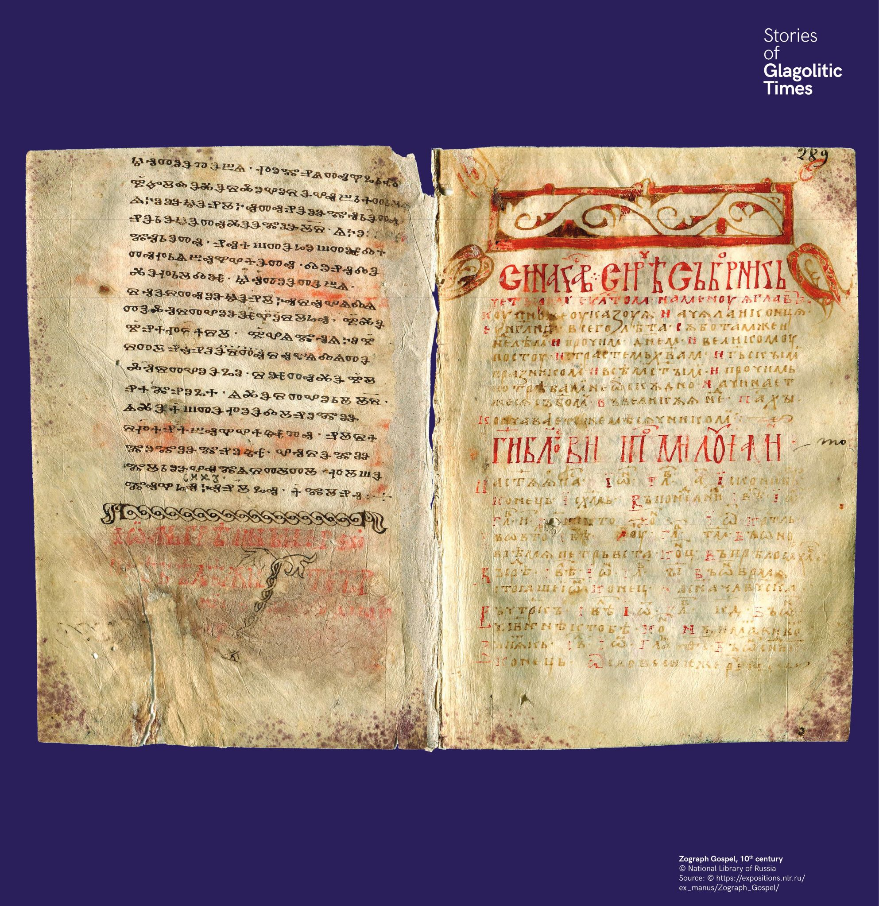

A glagolita emlékezete
A cirill írás uralkodóvá válása után a glagolita nem tűnt el azonnal. A 13. század végén a Zograf-evangéliumhoz cirill nyelvű szinaxáriont adtak hozzá.


A cirill írás uralkodóvá válása után a glagolita nem tűnt el azonnal. A 13. század végén a Zograf-evangéliumhoz cirill nyelvű szinaxáriont adtak hozzá.
След налагането на кирилицата глаголицата не изчезва веднага. В края на XIII век към Зографското евангелие е добавен кирилски синаксар.